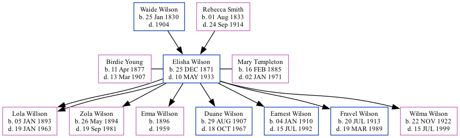

Elisha Filewood Wilson 1871 - 1933
[ Home ] | [ Surnames Index ] | [ Family History ]The twin brother of Elisha and the child of Waide Wilson and Rebecca Smith, was born in Chitwood, Missouri on Dec 25, 18711,2,3,4 along with his twin brother Elisha and was married twice - to Birdie Young (in 1893) Mary Templeton (on May 27, 1906 in Chitwood)2. He had 8 children: Zola Agatha with Birdie Rosetta; and Lola, Lola, Erma, Duane Templeton, Earnest D, Fravel Victor and Wilma Iona with Mary Etta.
During his life, he was living in Galena, Jasper, Missouri, USA in 18801; in Joplin Ward 5, Jasper, Missouri in 19002; in Shoal Creek, Newton, Missouri in 19103; and in Beaver, Washington, Colorado in 19304.
He died on May 10, 1933 in Akron, Col.
Parents
- Waide Hampton was born on Jan 25, 1830
- Rebecca Jane was born on Aug 1, 1833
Children
- Lola was born on Jan 5, 1893
- Zola Agatha was born on May 26, 1894
- Lola was born on Jan 5, 1893
- Erma was born in 1896
- Duane Templeton was born on Aug 29, 1907
- Earnest D was born on Jan 4, 1910
- Fravel Victor was born on Jul 20, 1913
- Wilma Iona was born on Nov 22, 1922
Citations
- 1880 United States Federal Census Ancestry.com Operations Inc (Age: 8; Marital Status: Single; Relation to Head of House: Son)
- 1900 United States Federal Census Ancestry.com Operations Inc (Age: 28; Marital Status: Married; Relation to Head of House: Son in Law; Relation to Head of House: Son-in-law)
- 1910 United States Federal Census Ancestry.com Operations Inc (Age in 1910: 38; Marital Status: Married; Relation to Head of House: Head)
- 1930 United States Federal Census Ancestry.com Operations Inc (Age: 58; Marital Status: Married; Relation to Head of House: Head)
Family Tree
Data (GEDCOM) maintained by Jay Weston Hannah, Omaha, Nebraska, USA.
Website generated by ged2site. Last updated on Jun 18, 2024.